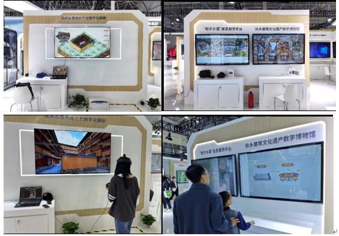
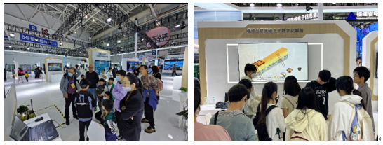

厦门大学闽台非遗文化数字化保护与智能处理文旅部重点实验室与建筑与土木工程学院联合多个文旅单位、乡村单位、设计协会等单位，长期在福建省乡村与建筑遗产方面开展多项数字化相关课题工作与研究，获得乡村与建筑遗产数字信息展示平台建设、城乡遗产数字化、文化挖掘与传播等多项科研转化成果。
2023年4月，厦门大学闽台非遗文化数字化保护与智能处理文旅部重点实验室与建筑与土木工程学院受邀参展第六届数字中国建设峰会，展示了三个数字乡村与建筑遗产的项目，分别是：1福建古厝营建工艺数字化解析（与漳州市南靖县文体旅局联合参展），2侨乡文化遗产数字博物馆（与中国历史文化名村晋江龙湖镇福林村联合参展），3 “数字乡建”信息服务平台（与福建省青年建筑师协会联合参展）。展览形式主要包括VR漫游体验、遗产数字化传播和传统工艺的数字化传承。通过数字技术的呈现，让观众以全新的方式感受到传统建筑遗产的魅力，并激发了大众对遗产保护的观念。

展览期间得到众多观展人员喜爱，也获得许多从事乡村振兴事业团队的赞许，同时在展览过程中，团队也收到了来自各行各业专家的建议和指导，这些建议为他们的项目提供了技术和理念上宝贵的新思路。

数字中国博览会作为展示数字经济发展成果的重要平台，为数字产业技术创新提供了崭新的机会。借此次数博会，厦门大学得以向来自全国各地的参展者展示数字技术在传统行业中的应用，同时也可以从全球范围内了解最新的数字技术创新成果，为他们的项目提供更多的启示和灵感。